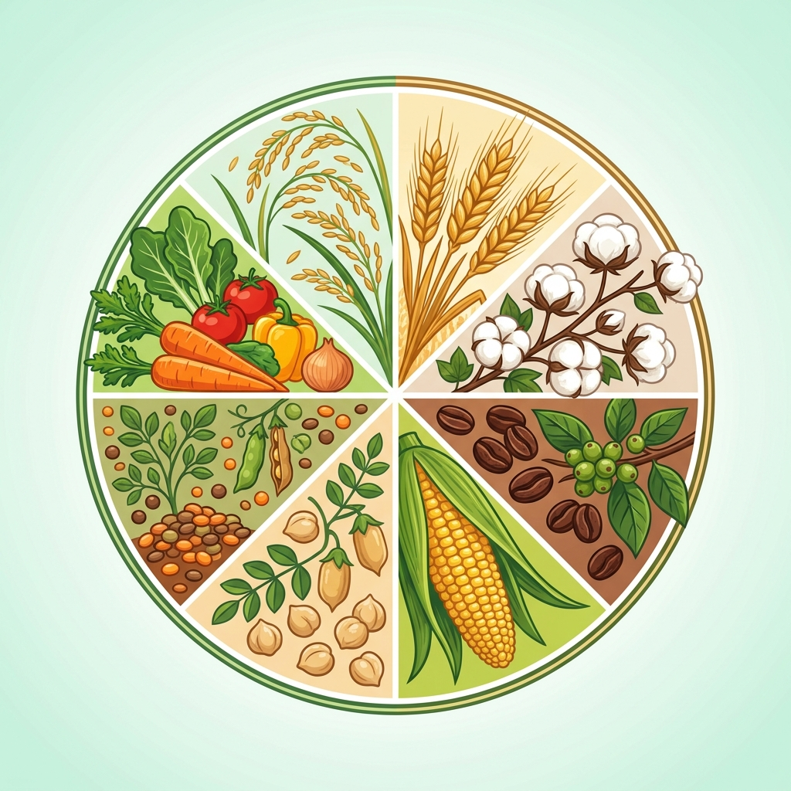
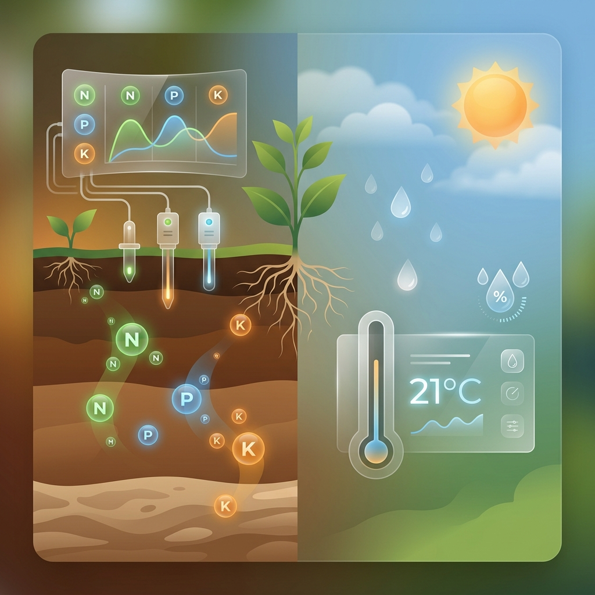

Smarter farming starts with intelligent crop recommendations.
Harness the power of machine learning and soil science to get data‑driven crop suggestions — powered by Random Forest models and explainable AI (SHAP) for precision agriculture.
- Multi‑crop support across 22+ crop types.
- Key features — N, P, K, pH, temperature, humidity, and rainfall analysis.
- Explainable predictions with SHAP‑based feature importance visualizations.

Support for 22+ crop varieties
From rice and wheat to cotton, coffee, and lentils — our model covers the major crops grown across diverse Indian agro-climatic zones, ensuring relevant recommendations for every farmer.
Soil & weather intelligence
Our system analyses soil nutrients (N, P, K, pH) alongside real-time weather data — temperature, humidity, and rainfall — to deliver hyper-precise crop recommendations tailored to your field conditions.

Enter field conditions
Provide soil nutrients and environmental parameters. A backend model (e.g., Random Forest in Python) can be plugged in later to generate real crop recommendations.
Recommendation & insights
AI-powered crop recommendation and market insights generated using live ML predictions.
Submit the form to see a sample recommendation. In a full implementation, this panel would display the predicted crop contributions from SHAP).